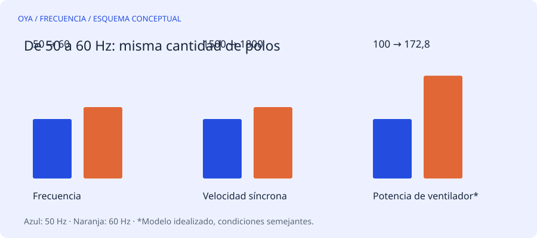

No es solamente una cuestión de velocidad
Pasar de 50 a 60 Hz aumenta la velocidad síncrona un 20 % si se mantienen los polos. Un motor de cuatro polos pasa de 1500 a 1800 r/min síncronas. Su velocidad real seguirá siendo algo menor cuando trabaje como motor de inducción, debido al deslizamiento. Ese cambio afecta tanto al circuito magnético como a rodamientos, ventilación y máquina accionada.
La autorización más clara es una placa que incluya ambas frecuencias y sus condiciones de tensión, corriente y potencia. Si solo aparece una frecuencia, conservar una relación matemática no equivale a disponer de autorización para el nuevo servicio.
Primera comprobación: voltios por hercio
Como aproximación, el flujo depende de V/(f·N), con N igual al número de espiras en serie por fase. Un motor de 400 V y 50 Hz tiene una relación de 8 V/Hz. A 400 V y 60 Hz, baja a 6,67 V/Hz: el flujo disminuye. No debe suponerse que conservará el mismo par disponible con cualquier carga.
El caso inverso puede ser más peligroso. Un motor de 460 V y 60 Hz tiene 7,67 V/Hz. Alimentarlo a 460 V y 50 Hz eleva esa relación a 9,2 V/Hz, un 20 % más. El riesgo de saturación y sobrecorriente aumenta. Reducir tensión puede aproximar el flujo original, pero también cambia la potencia y no sustituye las instrucciones del fabricante.
Segunda comprobación: qué pide la carga
Una cinta transportadora no responde igual que un ventilador. En una carga de par aproximadamente constante, subir un 20 % la velocidad exige aproximadamente un 20 % más de potencia mecánica para el mismo par.
En un ventilador semejante operando en condiciones comparables, las leyes de afinidad dan una exigencia de potencia proporcional al cubo de la velocidad. Subir de 50 a 60 Hz puede elevar esa exigencia a 1,2³ = 1,728, es decir, alrededor de un 73 %. Son relaciones aproximadas del sistema, no una predicción universal para cualquier bomba o instalación.
| Magnitud, mismos polos | Relación 60/50 Hz |
|---|---|
| Velocidad síncrona | 1,20 |
| Par a igual potencia | 0,833 |
| Potencia de ventilador idealizado | 1,728 |
Tercera comprobación: límites mecánicos y térmicos
Revisa la velocidad máxima del rotor y de la máquina accionada, el acoplamiento, la lubricación y las protecciones. A baja velocidad con variador, un ventilador solidario al eje puede refrigerar menos aunque la corriente parezca admisible. Por encima de la frecuencia base, la tensión del variador suele dejar de crecer; aparece una zona de debilitamiento de campo y disminuye el par disponible.
Antes de cambiar las espiras
La herramienta de adaptación de esta web calcula una relación teórica manteniendo flujo, conexión y geometría. No certifica potencia ni compatibilidad mecánica. Es preferible comprobar primero si existe una especificación doble 50/60 Hz o una solución con variador adecuada. Después deben verificarse corriente, temperatura, vibración y comportamiento con la carga real dentro de un procedimiento profesional.
Fuentes y alcance
Referencia de consulta: DOE: optimización de sistemas accionados por motores. Los ejemplos numéricos son educativos y no describen un trabajo realizado.